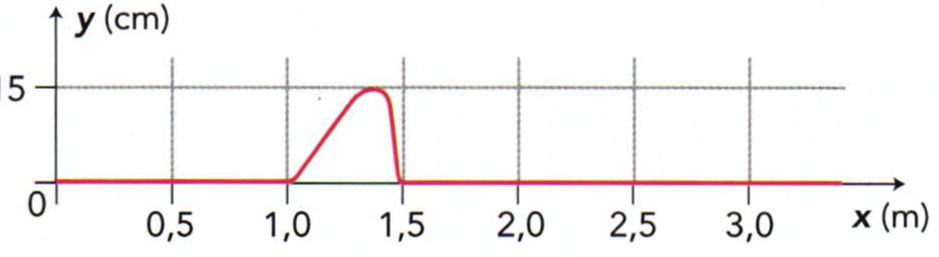
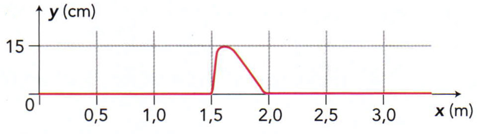
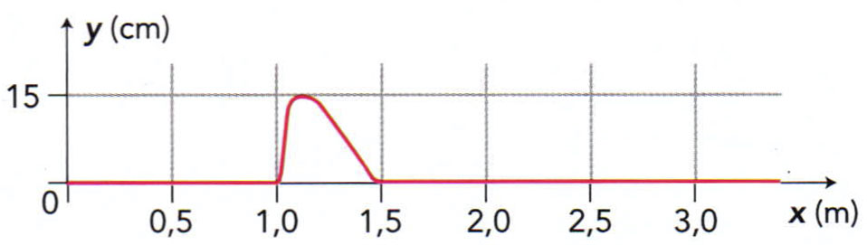

Calculer des durées de propagation
Dans cette bande dessinée, Averell Dalton place son oreille sur un rail en acier afin d’entendre le train.
Célérité du son :
- dans l’air : $\pu{340 m.s-1}$ ;
- dans l’acier : $\pu{5000 m.s-1}$.
Le train, situé à une distance $d = \pu{1000 m}$ d’Averell, émet un bruit caractéristique en passant sur un aiguillage.
- Au bout de quelle durée $\Delta t_A$ ce bruit est-il perçu par Averell ?
- Au bout de quelle durée $\Delta t_J$ est-il perçu par Joe qui se tient debout à ses côtés ?
- Avec quelle avance Averell perçoit-il ce bruit par rapport à Joe ?
Réponse
- $\Delta t_A = \dfrac{d}{v_{\text{acier}}}$
A.N. $\Delta t_A = \dfrac{\pu{1000 m}}{\pu{5000 m.s-1}} = \pu{0,200 s}$.
- $\Delta t_J = \dfrac{d}{v_{\text{air}}}$
A.N. $\Delta t_J = \dfrac{\pu{1000 m}}{\pu{340 m.s-1}} = \pu{2,94 s}$.
- Si on note $\Delta t$ le retard du signal que reçoit Joe par rapport à Averell, $\Delta t = \Delta t_J - \Delta t_A$ donc $\Delta t = d \cdot \left(\dfrac{1}{v_{\text{air}}} - \dfrac{1}{v_{\text{acier}}} \right)$
A.N. $\Delta t = \pu{2,94 s} - \pu{0,200 s} = \pu{2,74 s}$.
Déterminer une vitesse de propagation
On réalise l’enregistrement de l’élongation, notée $y$, du point $A$ d’une corde lors de la propagation d’une perturbation. Le point $A$ est situé à $\pu{1,50 m}$ de la source $S$ de la perturbation.
On déclenche le chronomètre au début de la perturbation provoquée en $S$.
- À quelle date $t_0$ la perturbation atteint-elle le point $A$ ?
- Pendant quelle durée $\Delta t$ le point $A$ est-il en mouvement ?
- Quelle est la célérité $v$ de la perturbation ?
Réponse
- Le graphique nous apprend que le point $A$ reste immobile jusqu’à la date $t_0 = \pu{0,20 s}$. C’est à cet instant là que l’onde l’atteint.
- Toujours sur le même graphique, on constate que le point $A$ est en mouvement jusqu’à la date $t_1 = \pu{0,25 s}$. Il reste immobile ensuite.
L’onde met donc en mouvement le point $A$ pendant $\Delta t = \pu{0,25 s} - \pu{0,20 s} = \pu{0,05 s}$. - L’onde parcourt la distance $d=\pu{1,50 m}$ pendant la durée $t_0$, donc $v=\dfrac{d}{t_0}$.
A.N. $v=\dfrac{\pu{1,50 m}}{\pu{0,20 s}} = \pu{7,5 m.s-1}$.
Déterminer une vitesse de propagation (suite)
Choisir l’allure de la corde à la date $t = \pu{0,20 s}$ dans l’expérience de l’exercice précédent parmi les propositions suivantes :
a. 
b. 
c. 
Réponse
L’exercice précédent nous a appris que le point $A$ se trouve à $\pu{1,50 m}$ de la source de l’onde et qu’à la date $t_0 = \pu{0,20 s}$ l’onde atteint tout juste $A$.
b. Cette situation est impossible puisqu’elle illustre une situation dans laquelle l’onde a totalement dépassé le point $A$ alors qu’on sait qu’elle arrive à peine au niveau de ce point à la date $t_0$.
a. et c. Ces situations respectent bien le fait que l’onde parvient tout juste au point $A$ à la date $t_0$. Pour trancher entre ces deux situations, il faut revenir à l’étude du graphique de l’exercice précédent, c’est à dire à l’évolution du point $A$ au cours du temps. On remarque que, depuis sa position d’équilibre, le point $A$ s’élève d’abord doucement (coefficient directeur de la tangente, donc dérivée, peu important) pendant une certaine durée ($\pu{0,03 s}$ environ) puis retombe rapidement (coefficient directeur de la tangente, donc dérivée, très grand). Cette évolution temporelle doit se traduire par la forme d’onde de la situation c.
Qui perçoit le son en premier ?
Un haut-parleur est en partie immergé dans l’eau d’une piscine. Il émet un son reçu par une nageuse $N$ sous l’eau et par un spectateur $S$ dans les tribunes. Le spectateur et la nageuse sont à la même distance $d$ du haut-parleur.
On donne la vitesse du son dans l’air et dans l’eau lors de l’expérience : $v_{\text{air}} = \pu{340 m.s-1}$ et $v_{\text{eau}} = \pu{1480 m.s-1}$.
- Le son est-il perçu en premier par $S$ ou par $N$ ?
- La durée séparant la détection du son par $S$ et par $N$ est notée $\Delta t$. Exprimer $\Delta t$ en fonction de $v_{\text{air}}$, $v_{\text{eau}}$, et $d$.
- Calculer $\Delta t$ lorsque $d = \pu{10,0 m}$.
Réponse
- Les perturbation se déplace plus rapidement dans l’eau que dans l’air. La nageuse la perçoit donc en premier.
- On note $t_N = \dfrac{d}{ v_{\text{eau}} }$ la date à laquelle la nageuse reçoit l’onde. De même, on note $t_S = \dfrac{d}{ v_{\text{air}} }$ la date à laquelle le spectateur reçoit le son.
$\Delta t = t_S - t_N$ est alors le retard avec lequel le son arrive au niveau du spectateur par rapport à l’instant où la nageuse reçoit ce son. $\Delta t = \dfrac{d}{ v_{\text{air}} } - \dfrac{d}{ v_{\text{eau}} } = d\, \left( \dfrac{1}{ v_{\text{air}}} - \dfrac{1}{ v_{\text{eau}} } \right)$. - A.N. $\Delta t = d = \pu{10,0 m} \times \left( \dfrac{1}{ \pu{340 m.s-1} } - \dfrac{1}{ \pu{1480 m.s-1} } \right) = \pu{2,27e-2 s}$.
Incertitudes sur la mesure
Un groupe d’élèves effectue la mesure de la célérité des ultrasons dans l’air dans une pièce à $\pu{20 °C}$. Leurs résultats sont regroupés dans le tableau ci-dessous :
| N° mesure | Valeur ($\pu{m/s}$) | N° mesure | Valeur ($\pu{m/s}$) |
|---|---|---|---|
| 1 | 338 | 11 | 338 |
| 2 | 341 | 12 | 336 |
| 3 | 338 | 13 | 342 |
| 4 | 340 | 14 | 341 |
| 5 | 337 | 15 | 337 |
| 6 | 339 | 16 | 342 |
| 7 | 342 | 17 | 336 |
| 8 | 338 | 18 | 338 |
| 9 | 340 | 19 | 339 |
| 10 | 339 | 20 | 343 |
- Proposer un montage et un Protocole permettant de mesurer la célérité des ultrasons dans l’air avec une bonne précision.
- À partir des mesures obtenues, évaluer la célérité des ultrasons dans l’air à $\pu{20 °C}$ en calculant l’incertitude de répétabilité avec un niveau de confiance de 95 %.
- De quel(s) paramètre(s) dépend cette valeur ?